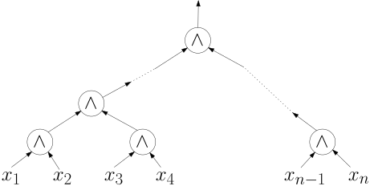

<div id="rightSideWrapper">
    <div class="content">
        <div class='chapter'>
            <div class='subChapter'>
                <h1 class='hidden-title'>
                    <span class='subChapterTitle'>Größe, Tiefe, Fan-In</span>
                </h1>

                <p>Für Boolesche Schaltkreise gibt es drei Komplexitätsparameter, die uns
                    interessieren.
                </p>
                <div class='well container theorem'>
                    <span class='numbered-title'>
                        Definition. 
                    </span>
                    Die <em>Größe</em> eines Schaltkreises ist die Anzahl seiner Gates, also die Anzahl
                    der Knoten im zugrundeliegenden DAG.
                    Die <em>Teife</em> ist die Länge des längsten gerichteten Pfades von einem Input- zu einem
                    Output-Gate.
                    Der <em>Maximum-Fan-in</em> ist der maximale Rein-Grad aller Knoten, also
                    der maximale Fan-in aller Gates.
                </div>
                <div class="alter-warning">
                    <strong>Vorsicht.</strong> Manchmal werden zur Bestimmung der Tiefe die NOT-Gates
                    nicht mitgezählt. Entlang eines Pfades wird also gelegentlich nur die Anzahl
                    der AND- und OR-Gates bestimmt.
                </div>
                <p>Für alle Parameter Größe, Tiefe, Maximum-Fan-in gilt: klein ist gut. Dies ist klar,
                    wenn Sie sich vorstellen, dass Schaltkreis industriell zum Einsatz kommt. Die Größe bestimmt
                    die Anzahl der Transistoren, die Sie brauchen; die Tiefe bestimmt die Dauer, die das Signal
                    braucht, um durch den ganzen Schaltkreis zu laufen und bestimmt somit die Geschwindigkeit, mit
                    der Ihr Schaltkreis seinen Job erledigt.
                </p>
                <p>Der Fan-in ist eher von theoretischem Interesse.
                    Wie bereits oben gesehen, können wir immer einen Fan-in von 2 garantieren, indem
                    wir AND- und OR-Gates mit mehr als zwei Inputs als verschachteltes AND oder OR darstellen:</p>
                <figure>
                    
                    oder alternativ:
                    
                </figure>
                <p>
                    In beiden Fällen ersetzen wir ein AND-Gate von Fan-in \(n\) durch
                    \(n-1\) AND-Gates von je Fan-in 2. Wenn wir allerdings die <em>Tiefe</em>
                    betrachten, so sehen wir, dass der linke Schaltkreis Tiefe \(n-1\) hat,
                    der rechte jedoch nur \(\ceil{\log_2(n)}\). Ganz allgemein stellen wir fest:
                </p>
                <div class='well container theorem'>
                    <span class='numbered-title'>
                        Theorem 
                    </span>
                    Sei \(C\) ein Schaltkreis Maximum-Fan-in \(k\), Größe \(s\) und Tiefe \(d\).
                    Dann gibt es einen äquivalenten Schaltkreis \(C'\) mit Maximum-Fan-in \(2\),
                    Größe höchstens \(s (k-1)\) und Tiefe höchstens \(d \ceil {\log_2 k}\).
                </div>

            </div class='subchapter'>

        </div class='chapter'>


    </div class="content">
</div class="rightSideWrapper">
